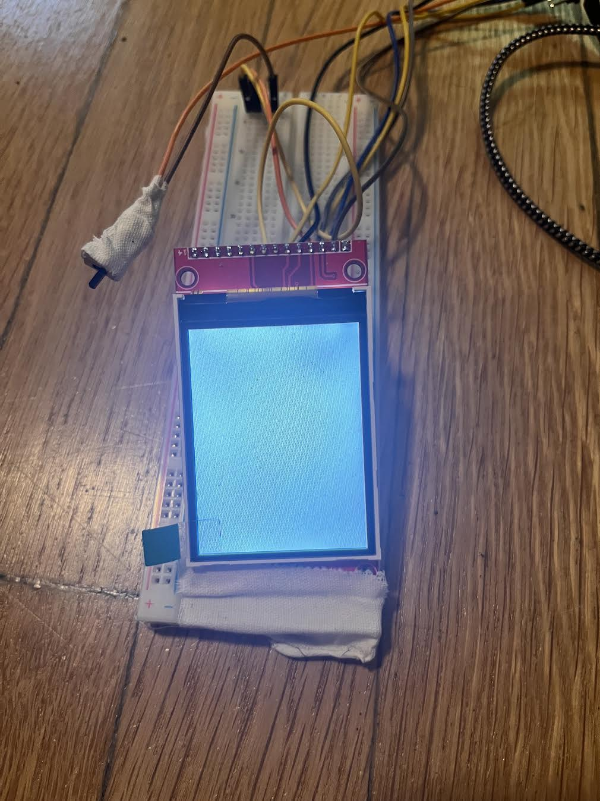

<div class="textcontainer">
<p class="margin"> </p>
<h2>Week 7: Electronic Outputs</h2>
<h3>Minimum Viable Product – Water Dispenser Display</h3>
<div style="background-color: white; padding: 20px; border-radius: 10px; box-shadow: 0 0 10px rgba(0,0,0,0.1); max-width: 800px;">
<p>
For this week, I attempted and worked on the hardest part (personal opinion) of my final project — building the display part of my water dispenser. The main goal was to display the amount of soda being poured in ML and the time the water is being poured in AM/PM format on a screen. Unlike what I thought, this whole process was pretty complicated and challenging.
</p>
<p> Screen before applying the code: </p>

<p> Screen after applying the code: </p>
<img src="screendisplayafter.jpg" style="max-width: 400px; border: 1px solid #ccc;">
<h4>1. Input Device</h4>
<p>
For input, I used a physical lever/switch to turn on the screen display. When I flip the switch, it shows the screen with detailed information of the real life time and amount of water being poured.
</p>
<h4>2. Output Device</h4>
<p>
My output device is a TFT screen (ILI9341). It shows two things:
<ul>
<li><strong>Volume:</strong> Amount in mL of water being poured (calculated at 20 mL per second)</li>
<li><strong>Time:</strong> A clock that shows current time the water is being poured, showing AM or PM based on the internal counter</li>
</ul>
When the dispenser is active, the numbers update live — you can see both the volume going up and the time changing every second. This helped me practice displaying live information without blocking the system.
</p>
<h4>3. Code (C++ Class & No delay)</h4>
<p>
Below is the code I used:
<pre style="background:#f8f8f8; padding:15px; border-radius:10px; overflow-x:auto; font-family:monospace; font-size:13px;">
#include &lt;Adafruit_GFX.h&gt;
#include &lt;Adafruit_ILI9341.h&gt;
#include &lt;SPI.h&gt;
#define TFT_CS 10
#define TFT_DC 8
#define TFT_RST 9
#define SWITCH_PIN 2
#define FLOW_PIN 3
#define PULSE_PER_LITER 450.0
#define mL_per_pulse (1000.0 / PULSE_PER_LITER)
Adafruit_ILI9341 tft(TFT_CS, TFT_DC, TFT_RST);
volatile unsigned long pulseCount = 0;
class RealDispenser {
private:
bool pouring = false;
unsigned long startMillis = 0;
unsigned long lastUpdate = 0;
public:
void begin() {
pinMode(SWITCH_PIN, INPUT_PULLUP);
pinMode(FLOW_PIN, INPUT_PULLUP);
attachInterrupt(digitalPinToInterrupt(FLOW_PIN), countPulse, RISING);
tft.begin();
tft.setRotation(1);
tft.setTextSize(2);
tft.setTextColor(ILI9341_BLACK, ILI9341_WHITE);
tft.fillScreen(ILI9341_WHITE);
showMessage("Ready. Flip switch.");
}
void update() {
bool switchOn = digitalRead(SWITCH_PIN) == LOW;
if (switchOn && !pouring) {
pouring = true;
pulseCount = 0;
startMillis = millis();
lastUpdate = 0;
}
if (pouring) {
unsigned long now = millis();
if (now - lastUpdate >= 1000) {
lastUpdate = now;
float volume = pulseCount * mL_per_pulse;
printInfo(now, volume);
}
if (!switchOn) {
pouring = false;
showMessage("Stopped.");
}
}
}
void printInfo(unsigned long ms, float volume) {
unsigned long totalSec = ms / 1000;
int sec = totalSec % 60;
int min = (totalSec / 60) % 60;
int hour = (totalSec / 3600) % 24;
int hour12 = hour % 12;
if (hour12 == 0) hour12 = 12;
String ampm = hour >= 12 ? "PM" : "AM";
char timeStr[16];
sprintf(timeStr, "%02d:%02d:%02d %s", hour12, min, sec, ampm.c_str());
tft.fillScreen(ILI9341_WHITE);
tft.setCursor(10, 40);
tft.print("Time: ");
tft.println(timeStr);
tft.setCursor(10, 100);
tft.print("Volume: ");
tft.print(volume, 1);
tft.println(" mL");
}
void showMessage(String msg) {
tft.fillScreen(ILI9341_WHITE);
tft.setCursor(10, 60);
tft.println(msg);
}
};
void countPulse() {
pulseCount++;
}
RealDispenser dispenser;
void setup() {
dispenser.begin();
}
void loop() {
dispenser.update();
}
</pre>
As shown above, I used <code>millis()</code> to keep track of time and simulate a real-time pouring experience. I avoided using <code>delay()</code> completely. While my original code didn’t use a C++ class, I’m planning to wrap the logic into a class soon so it’s more modular and clean.
</p>
<h4>Conclusion</h4>
<p>
So far, I'm happy with how I was able to create a working part of my final project. Though I still have a lot to go, I'm glad that the screen is working, the values are updating live, and I’ve practiced using serial input, output displays, etc. The next step is adding a real sensor and maybe a pump.
</p>
</div>